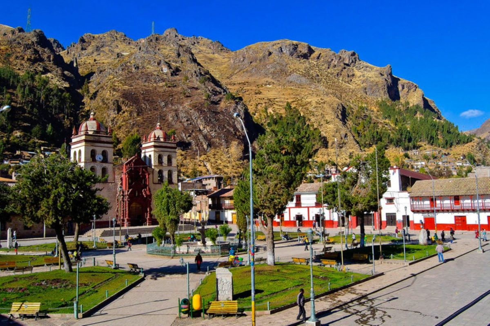
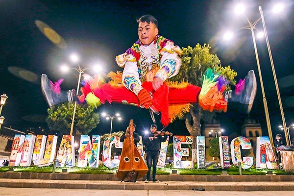
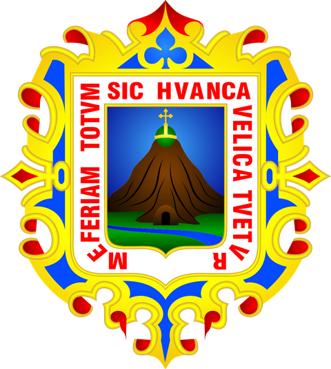
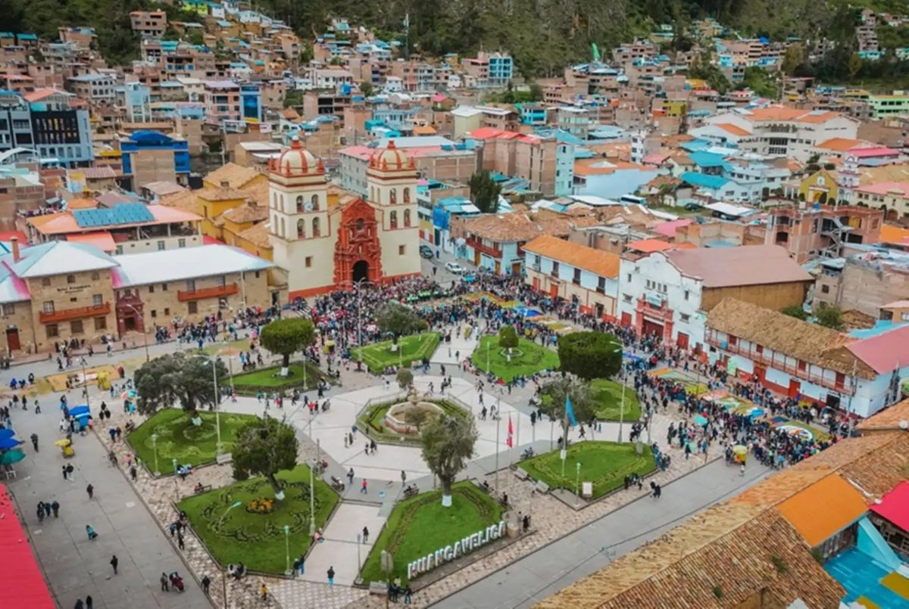
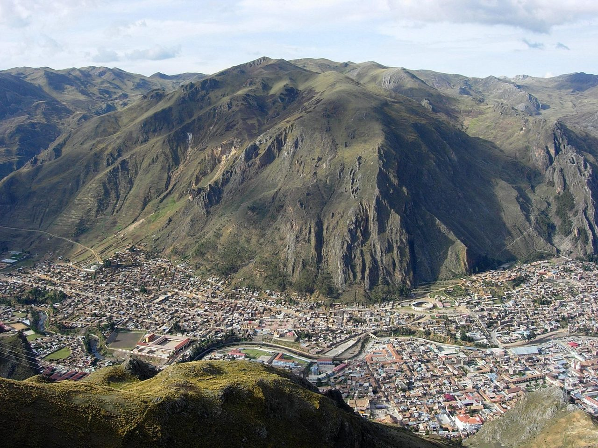
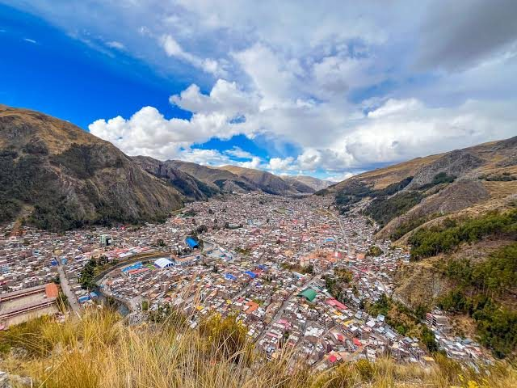

Plaza de Armas y catedral de San Antonio
El centro de la ciudad colonial. Empieza el recorrido aquí: casi todo lo demás queda a una caminata corta.
Región andina de Perú · 3.676 m s. n. m.
Iglesias coloniales, una mina que alimentó la plata del virreinato, tejidos que se hacen a mano y lagunas a más de tres mil metros de altura.



Huancavelica existe por el mercurio. Los españoles lo llamaban azogue y lo necesitaban para refinar la plata. La mina de Santa Bárbara, descubierta en el siglo XVI, convirtió este valle frío en una de las ciudades más importantes del virreinato.
Hoy la ciudad guarda esa herencia en sus iglesias y en su plaza. Y conserva algo anterior y más vivo: tejidos, danzas y fiestas que siguen celebrándose en las comunidades.
Doce lugares y tradiciones, desde la plaza de la ciudad hasta pueblos a una o dos horas de camino. Filtra por categoría, busca por palabra clave o guarda tus favoritos en Mi ruta.
El centro de la ciudad colonial. Empieza el recorrido aquí: casi todo lo demás queda a una caminata corta.

Huancavelica conserva ocho iglesias de valiosa arquitectura colonial. Se recorren a pie en una mañana.

Está en el cerro Chacllatacana. De aquí salió el azogue que usaban los españoles para refinar la plata. Pregunta en la ciudad por el estado del acceso antes de ir.
Guarda la momia conocida como el Niño de Pultocc, una de las piezas más comentadas del museo.

Aguas termales y piscina en el barrio de San Cristóbal. Según un reportaje de Andina, es el único de los tres complejos turísticos de la ciudad que atiende a visitantes. Confirma el horario al llegar.
Yauli es conocido como la capital de la artesanía textil y conserva técnicas ancestrales de tejido. Desde allí parte el circuito arqueológico de Uchkus Inkañan, de entrada gratuita.
La ruta de las lagunas pasa por Santa Inés, donde se sirve trucha. Choclococha cierra el circuito: detente en la orilla para ver el antiguo pueblo y sus casas.
El templo inca de Huaytará y el museo Humberto Espinoza Lozano están entre los atractivos más importantes de la región.
Un distrito con pinturas rupestres, cañones, formaciones geológicas y cuevas. Conviene ir con guía local.
Capital de provincia de clima más templado. En el barrio de Pueblo Viejo se conservan construcciones coloniales.
El baile emblemático de Huancavelica, reconocido por la Unesco como Patrimonio Cultural de la Humanidad. Se ve sobre todo en fiestas patronales: consulta el calendario antes de viajar.
La fiesta en que se arrea y esquila a las vicuñas, una de las grandes tradiciones de la región. Las fechas cambian cada año: pregunta en la municipalidad.
Prueba con otra palabra clave o vuelve a mostrar las doce recomendaciones de la guía.
Toca cualquier imagen para abrir el visor a pantalla completa y deslizar entre las fotografías y símbolos de la región.
Cocina de altura: maíz, papa, carne de alpaca, cuy, carnero y trucha de las lagunas.
Se prepara en la víspera de la mayoría de las fiestas. Lleva maíz blanco o mote, carne de res, carnero y tocino.
Cocinada bajo tierra. Aquí se distingue por la carne de alpaca y el cuy.
Uno de los platos principales de la región, que es gran productora de alpacas.
Dos platos de olla que reconfortan en las noches frías de la ciudad.
Se come en el pueblo de Santa Inés, de camino a las lagunas.
Patachi, japchi, picante de queso y mazamorra de calabaza se preparan en los festivales gastronómicos de la provincia.
Elige cuánto tiempo tienes. Cada ruta suma a la anterior y puedes tocar cada etapa para marcar tu avance.
Vilca es una excursión aparte, mejor con guía local y más de un día.
Accesos principales por carretera desde la sierra central y la costa peruana, además del estado actual del ferrocarril.
144 km por carretera: unas 4 horas en bus o 3 horas en auto. Es la entrada más usada.
245 km por Rumichaca: unas 5 horas.
499 km pasando por Pisco: unas 10 horas por carretera.
La línea Huancayo–Huancavelica mide unos 128 km. Entre 2024 y 2025 volvió a llevar pasajeros solo en el tramo Chilca–Cuenca, gratis y de forma temporal, con ampliación anunciada hasta Mariscal Cáceres. La modernización completa sigue en marcha, así que no cuentes con llegar en tren a la ciudad sin confirmarlo antes con el MTC.
Cinco recomendaciones prácticas para disfrutar la altura y las comunidades con tranquilidad.
A 3.676 metros, el primer día conviene ir tranquilo, beber agua y comer liviano. Si tienes problemas del corazón, respiratorios o estás embarazada, consulta con tu médico antes de ir.
Los días pueden ser soleados y las noches, muy frías. Abrigo, gorro, protector solar y calzado cómodo para calles empedradas.
En los pueblos pequeños es difícil pagar con tarjeta. Cambia billetes antes de salir de la ciudad.
Horarios de museos, termas, fiestas y transporte cambian. Pregunta en la municipalidad o en tu alojamiento.
En las comunidades y fiestas, pregunta antes de fotografiar a las personas, y más si son bailarines o tejedoras.
Los datos de esta guía vienen de estas publicaciones. Revisa siempre la información actual antes de viajar.